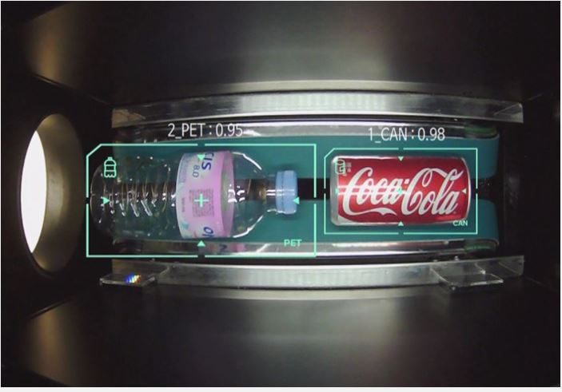
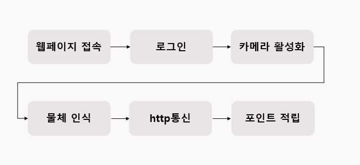
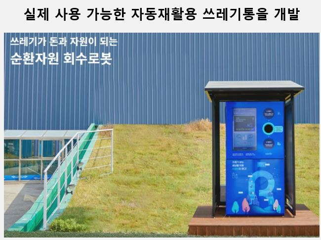

<ion-header [translucent]="true">
  <ion-toolbar>
    <ion-buttons slot="start">
      <ion-menu-button></ion-menu-button>
    </ion-buttons>
    <ion-title>project</ion-title>
  </ion-toolbar>
</ion-header>


<ion-content>
  <ion-item> <h1>작동 기대 화면</h1></ion-item>   
  <ion-item> <h1>작동 로직</h1> </ion-item>  
  <ion-item> <h1>실제 사용중인 비슷한 기계</h1></ion-item> 
</ion-content>
